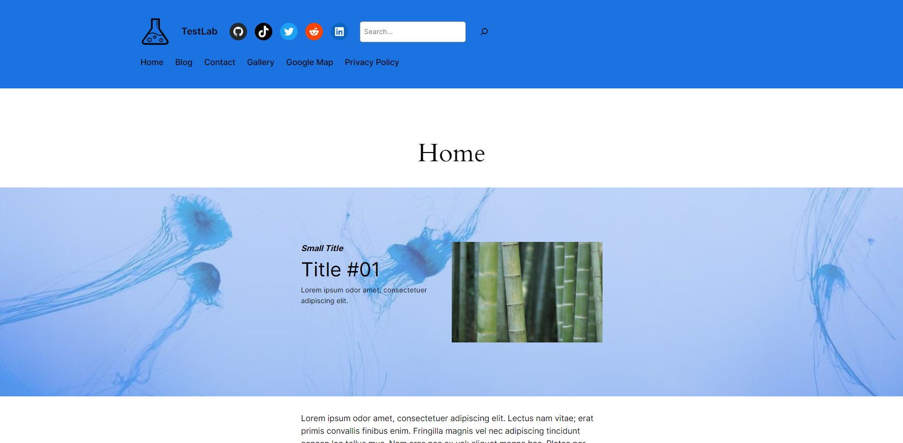
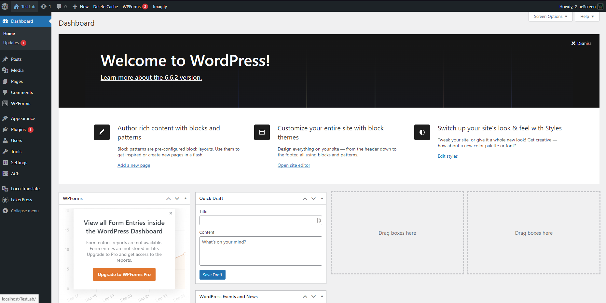
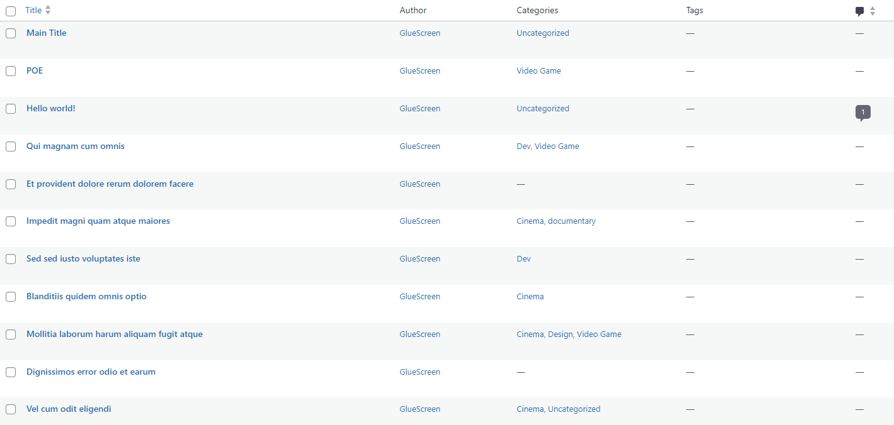
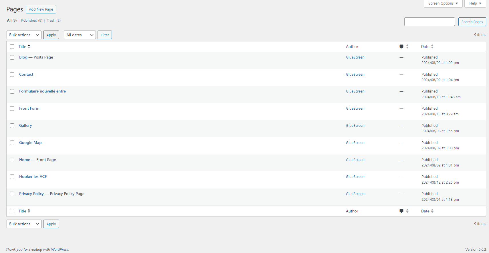
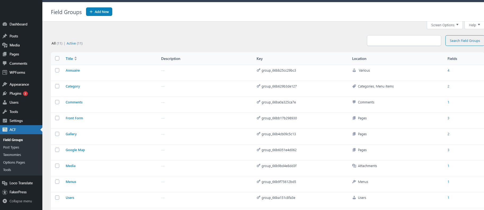
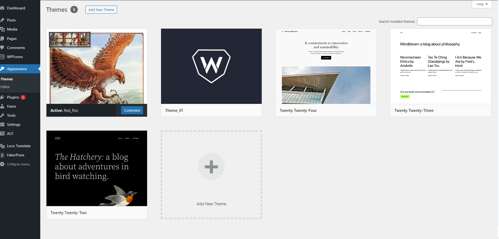
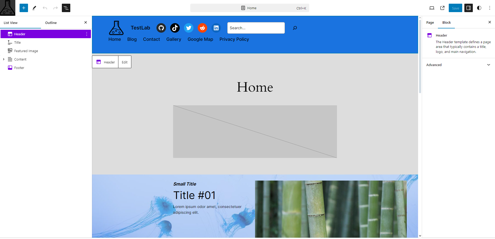
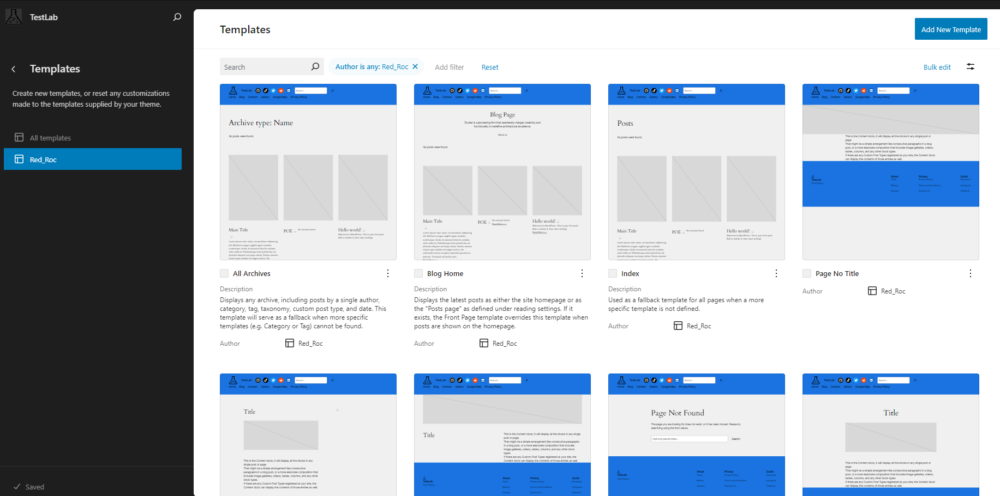

Projet réalisé sur 1 mois où j'ai découvert WordPress, j'ai d'abord commencé en créant un thème puis je suis passé sur du FSE En suivant la Formation de capitaineWP où j'ai créé le template d'un site vitrine d'entreprise.
Image du Projet Finale :
J'ai utilisé MAMP pour le développement avec un serveur local avec Phpmyadmin pour la Base de Données. MAMP m’a posé plusieurs problèmes, je pense que Local By FlyWheel est une meilleure options avec plus de fonctionalité.

WordPress fonctionne avec une partie admin sur le site, qui permet d'accéder à toutes Les fonctionnalités de WordPress qu'on peut voir dans la barre de gauche.
Le thème dans WordPress représente le style global du site comme un fichier CSS mais va plus loin. WordPress propose des thèmes de base (nommés en fonction de l'année de sortie). Pour avoir un maximum de contrôle sur le site, l'objectif était de créer un Custom Theme appelé Theme_01 Un Custom Theme est représenté par un dossier qui peut contenir plusieurs fichiers .php qui représentent chacun une fonctionnalité de WordPress Mais le fichier style.css qui déclare le thème suffit. Afin de créer des posts de test pour tester leur affichage avec le thème, j'ai utilisé le plugin FakerPress Voilà la dans la partie admin, la liste des posts. La plupart ont été créés par FakerPress.
Les Pages sont une partie importante, elles représentent les principaux fichiers HTML du site, Wordpress permet de taguer certaines pages spécifiques comme "Posts Page, Front Page".
Advanced Custom Field est un plugin très populaire qui permet de créer des groupes de variables assignables à différentes pages, ces groupes peuvent ensuite être remplis en éditant la page
J'ai appris à intégrer une carte Google Maps lors de ce projet qui est une technique pas spécifiquement lié à WordPress. En Dessous il y'a un Google Calendar que j'ai aussi intégré.

Après avoir créé le premier thème, j'ai créé un second : Red_Roc (Qu'est-ce qu'un Roc?) qui est un thème en FSE (Full Site Editing) cette fois, c'est-à-dire qu'il se base sur un des thèmes de base que je modifie ensuite avec les outils de WordPress sans trop toucher à du code. Je me suis écarté de la formation avec ce thème en partie car j'étais plus à l'aise avec WordPress.
Sur l'image du dessus, on peut voir qu'à gauche, en dessous de Appearance, il y a Themes et Editor : cliquer sur Editor permet d'accéder au outils FSE qui a aussi un menu sur la gauche que l'on peut voir sur l'image à gauche.
Voilà l'éditeur de page en FSE qui fonctionne avec des blocs comme le bloc de text ou image, à gauche il y'a la hiérarchie des éléments la page Et à droite les options pour chaque bloc. Il y'a aussi deux éléments spéciaux Header et Footer qui sont construits à part.
La Color palette est une partie importante et sûrement la première chose à faire lors de la création d'un thème car elle permet de définir une palette de couleurs pour le thème.
Les Templates sont également une partie importante du FSE, ils permettent de définir l'apparence des pages principales de WordPress comme la page des blogs où tous les posts sont listés.
WordPress me paraît être un très bon outil principalement pour deux choses : 1) Rapidité Après ce projet, il me paraît qu'il est possible de créer extrêmement rapidement des projets, surtout s'ils suivent bien un template. 2) Customisation La partie admin est relativement simple à utiliser et peut être customiser et WordPress permet de donner l'accès à d'autres gens, comme des clients qui peuvent ensuite faire leurs propres modifications. Cependant, pour un plus gros projet et qui correspondrait moins à un template, j'aurais plutôt tendance à utiliser React.